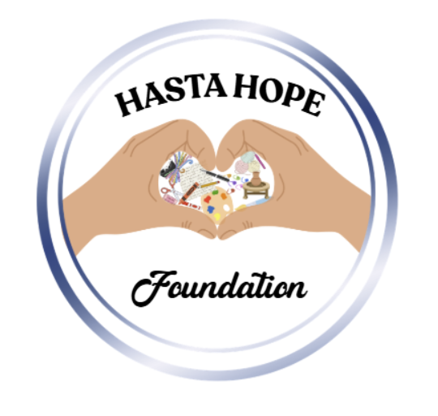
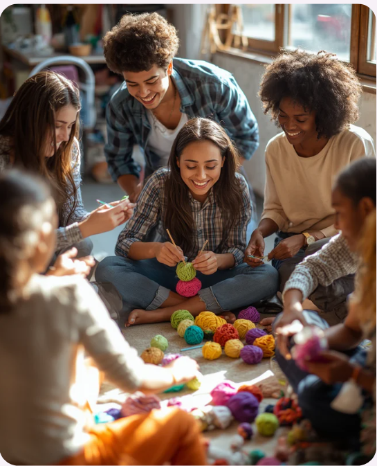
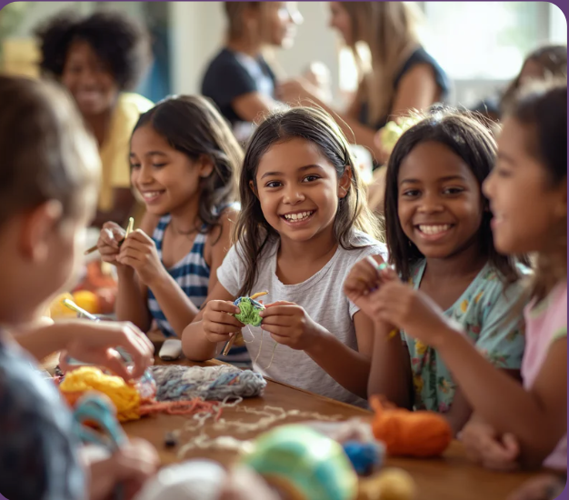
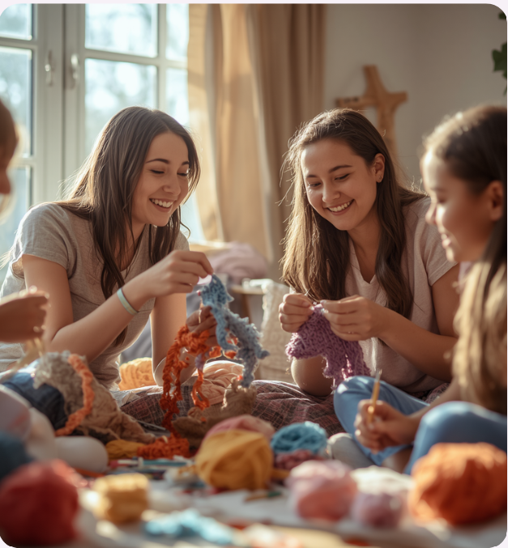
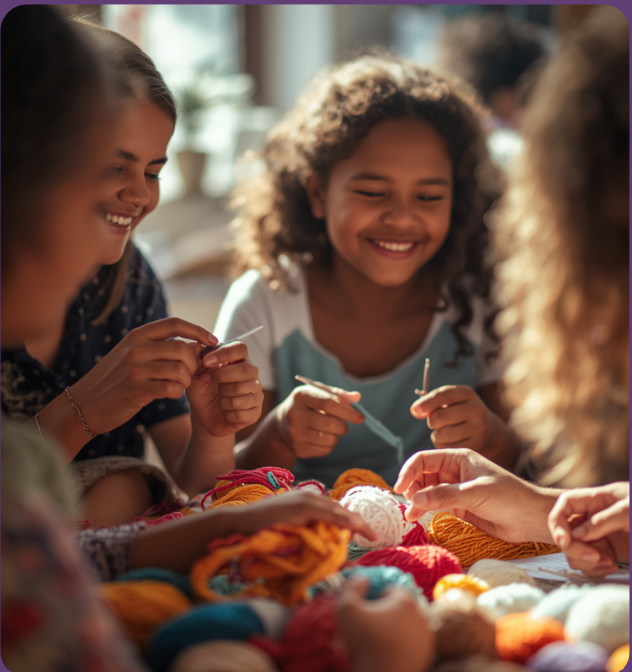
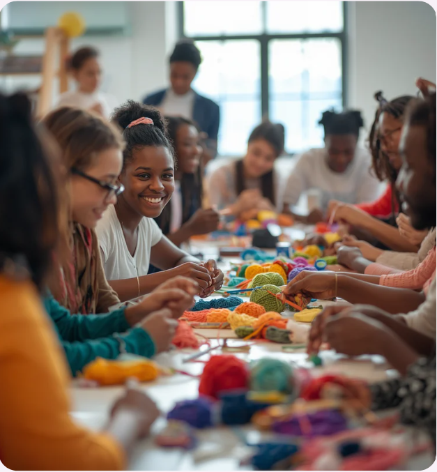
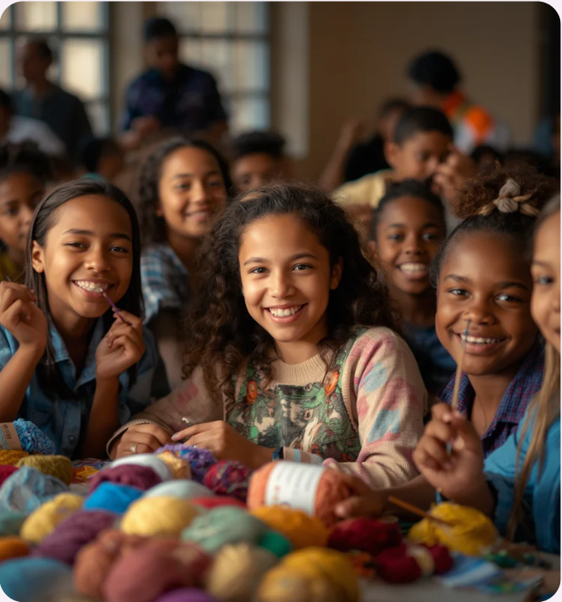
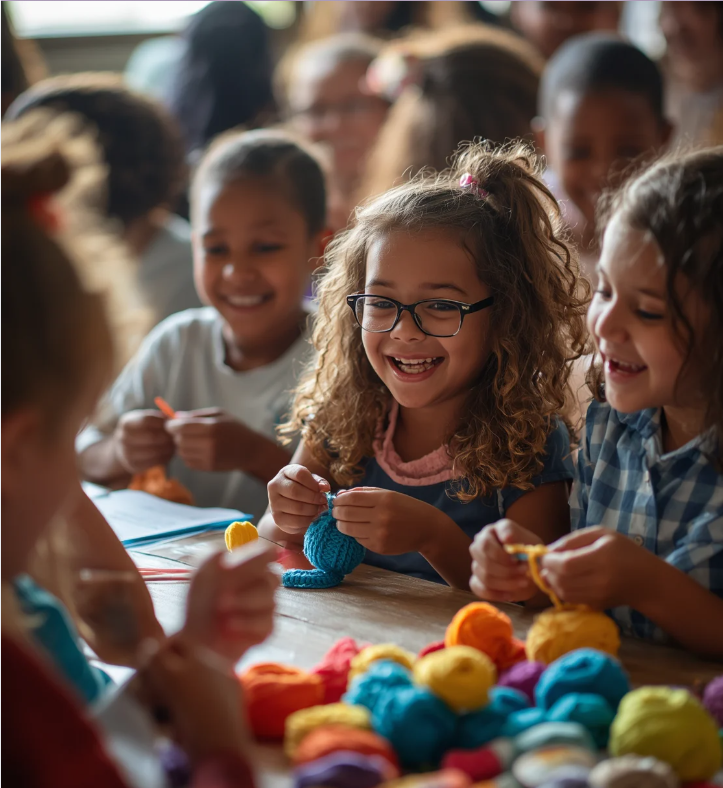
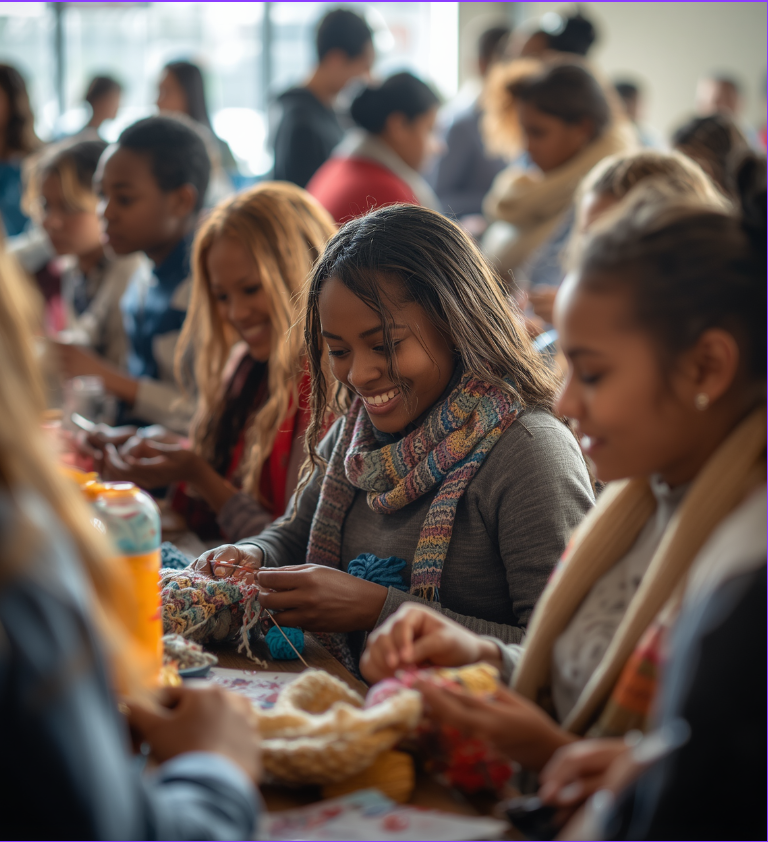

← Hasta Hope FoundationAt Crochet For Hope, we teach youth the art of crochet, fostering creativity while positively impacting our community through various initiatives.
LEARN MORE →

Creating community through creativity. At Crochet For Hope, we believe in the power of creativity to bring about meaningful change. Our mission is to teach youth the art of crochet while fostering a sense of community and service. Through workshops, participants learn valuable skills while contributing to impactful initiatives that support food security and healthcare.
Each stitch we make is a step towards a brighter future. We focus on building leadership skills and encouraging collaboration, ensuring every participant leaves with both knowledge and a sense of purpose.
Crochet For Hope was born from cherished family moments spent learning the art of crochet. Sisters Sejal and Novika Thatipamula learned these skills during the summer of 2024, inspired by their grandmother's teachings. This passion has since blossomed into a community-driven initiative.
Today, we empower youth to stitch together not only beautiful creations but also impactful lives. Each program we offer fosters skills that extend beyond crochet, instilling values of service, compassion, and leadership in our community.


At Crochet For Hope, we celebrate our achievements as a testament to the power of community. From raising over $3,480 to supporting 1,704 meals, every stitch contributes to meaningful change. Our initiatives have not only provided 60 blankets for wildfire relief but have also engaged 36+ youth participants across five school districts, fostering leadership and compassion.
Our journey began with a simple vision, and we are proud to see it flourish. Together, we are making a difference, one stitch at a time.
We actively support local communities by providing food security initiatives, ensuring families have access to nutritious meals through our workshops and fundraising efforts, making a tangible difference in their lives.
→Crochet For Hope contributes to healthcare support by donating funds to local hospitals, ensuring children receive necessary medical care and resources, while promoting the importance of health and wellness within our community.
→In times of crisis, we mobilize our community to provide essential supplies and support. Through crochet projects, we create blankets and resources for those affected by natural disasters, fostering hope and resilience.
→At Crochet For Hope, we invite you to be part of transformative workshops that empower youth while fostering community connections. Your participation not only teaches invaluable skills but also contributes to meaningful initiatives that help those in need.
By joining our workshops, you can connect with others who share your passion for crochet and community service. Every stitch we create together translates into real-world impact, supporting food security, healthcare, and relief efforts.


At Crochet For Hope, we believe that every contribution matters. Whether you're passionate about crocheting or just want to support our mission, there are many ways to get involved. From participating in our workshops to donating supplies or funds, your efforts can help us continue making a positive impact in our community.
Join us in spreading warmth and hope through the art of crochet.

At Crochet For Hope, our journey is shaped by community and compassion. From the very first stitches to the impactful projects we undertake, every moment fosters connections and growth. Our youth are not just learning crochet; they are becoming leaders in service, cultivating kindness through their contributions to food security, healthcare support, and more.
